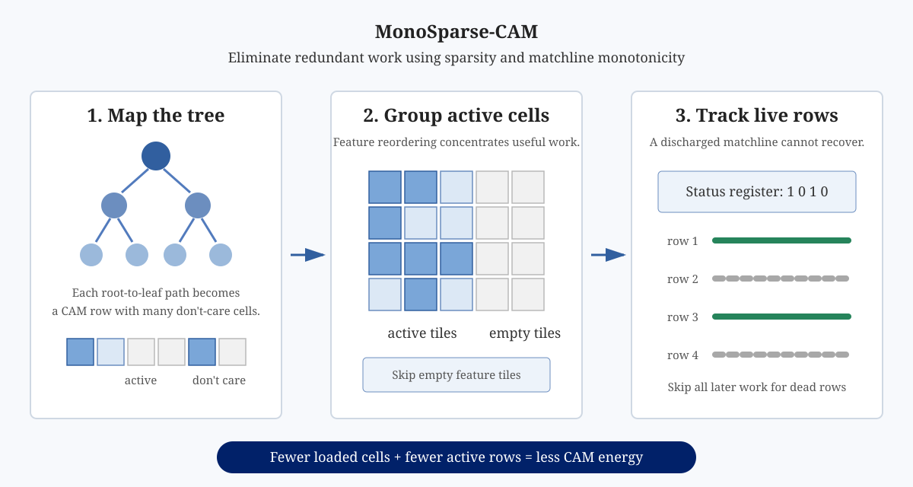

IEEE ISCAS 2025 · First Author
MonoSparse-CAM: Efficient Tree Model Processing via Monotonicity and Sparsity in CAMs
MonoSparse-CAM combines model sparsity with a circuit invariant to stop loading cells and evaluating rows that can no longer affect the answer.

28.56×
maximum energy reduction versus raw CAM processing
18.51×
maximum energy reduction versus the prior feature-reordering technique
0.40 µJ
mean across sparsity levels for a 240×320 model on a 24×48 CAM, versus 3.77 µJ raw
418 GOPS/W
peak simulated computational efficiency
Problem
Decision trees map naturally into analog CAM rows, but large models must be tiled across smaller arrays. Conventional execution still spends energy on don't-care cells and keeps comparing rows that already mismatched. Feature reordering helps sparse models, but loses effectiveness as mapped arrays become denser.
Approach
Exploit sparsity: reorder features so active cells are concentrated, allowing empty feature tiles to be skipped.
Exploit monotonicity: once a precharged matchline discharges after a mismatch, it cannot recover during that search.
Track live rows: a compact status register records surviving matchlines so all later operations on dead rows can be suppressed.
My Role
As first author, I led MonoSparse-CAM, a hardware-software co-design that combines tree-model sparsity with matchline monotonicity to eliminate redundant CAM operations.
Citation
T. Molom-Ochir, B. Taylor, H. Li, and Y. Chen, "MonoSparse-CAM: Efficient Tree Model Processing via Monotonicity and Sparsity in CAMs," 2025 IEEE International Symposium on Circuits and Systems (ISCAS), pp. 1–5, 2025. DOI